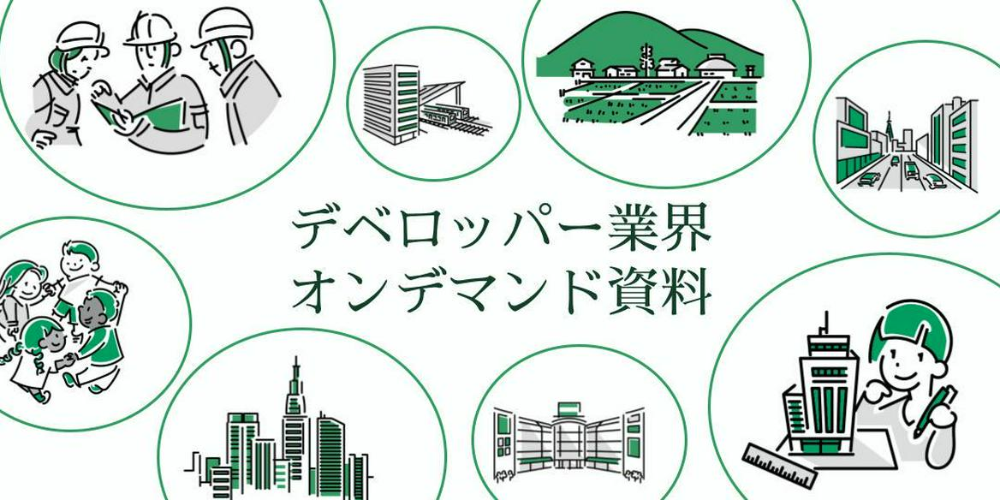

【オンデマンド】デベロッパー
デベロッパーって何？各社の特徴は？1から10まで徹底解説！
街づくり・地図に残る仕事・大規模プロジェクト・地方創生・コミュニティづくり・狭き門…様々なキーワードで表されるデベロッパー業界。
実際は何やってるの？各社の特徴は？どうやったら選考突破できるの？
そんな皆さんの疑問への答えがぎゅっと詰まったこちらの資料を是非ダウンロードしてみてください！
こんな人におすすめ！
●デベロッパーに惹かれており、もっと知識を深めたい人●サマーインターンに向けて、選考を突破するコツが知りたい人
●説明会では聞けない話が聞きたい人
とにかくデベロッパーについて知りたい人、ぜひ手に取ってみてください！
コンテンツ内容
✅メンター直伝！デベロッパー業界・企業レクチャー→デベってどんなことする業界？各社の特徴は？選考を受ける前に知っておきたい情報満載！
✅狭き門を突破せよ！各選考のコツ
→実際にインターンに参加できたメンターはどこが評価されたのか？自分と照らし合わせて、インターンへの切符をつかもう！